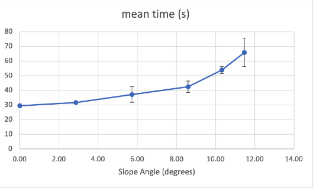

Evaluation Tests?
Wheel Propulsion Testing
The system performs well on a variety of slopes, we tested it on a 10m track at different inclines and recording the time taken and the results can be seen below.
Below, we demonstrate how we performed the tests on Webots
Sensor Testing
We tested to see how the left and right sensor reads the distance to the closest object by rotating the wheelchair. The blue graph shows the reading of the left sensor and Yellow, the reading of the right sensor. The green line shows the speed of rotation of the wheel. The sensor values are shown with respect of time while the speed of the wheel, measured in rad/s, with respect of time. The graph is shown below.

The simulation itself was very unstable, this can be seen in the large error bars at certain angles, which represent 1 standard deviation across the measured times.
Collision Detection
For this we used a human model in Webots.
We then focused on finding a detection distance for the side sensors that allowed normal movement. We iteratively decreased the distance used for the forward-facing sensor until the wheelchair would be able to turn and have a comfortable amount of room from an obstacle while stopping it from colliding with anything too close. We decided on a distance of 0.45m, roughly half the wheelchair length.
Below, we are sharing a demonstration on how we performed the collision tests
SOS Module
Due to unavailability of hardware, our evaluation has not been extensive. However, we have ascertained the following from our real-world tests/
- ESP-32s communicate wirelessly only in line of sight.
- Range of (line of sight) communication can extend up to 200 meters for 100% packet exchange rate.
- Due to unavailability of the antenna module, no comments can be made on the extension of wireless range of communication on the ESP module.
Below, we are showcasing the behaviour of the relays when the wheelchair moves around the room. As you may see on the top left, it shows which relay turns red according to the position of the wheelchair in the corridor.